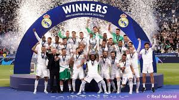

Main Trophies
Champions League: 14 Trophies
La Liga: 35 Trophies
Copa del Rey (Spanish Cup): 20 Trophies
Spanish Super Cup: 12 Trophies
FIFA Club World Cup: 5 Trophies
Other Trophies
UEFA Super Cup: 5 Trophies
International Cup: 3 Trophies
Learn more about Real Madrid's achievements on Official Website.
Explore UEFA Champions League history on UEFA's Website.